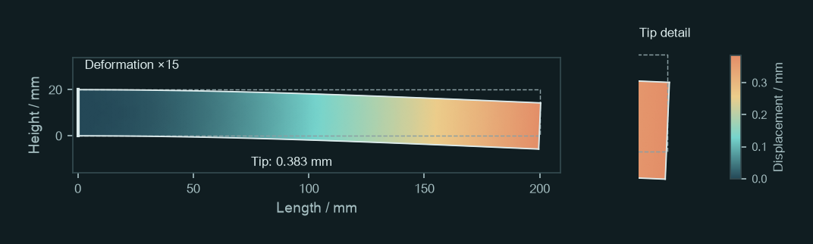
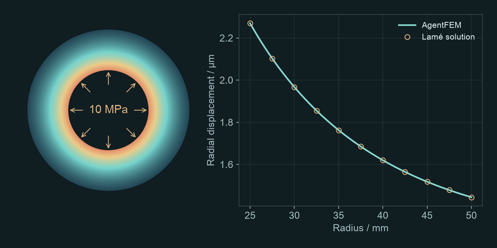
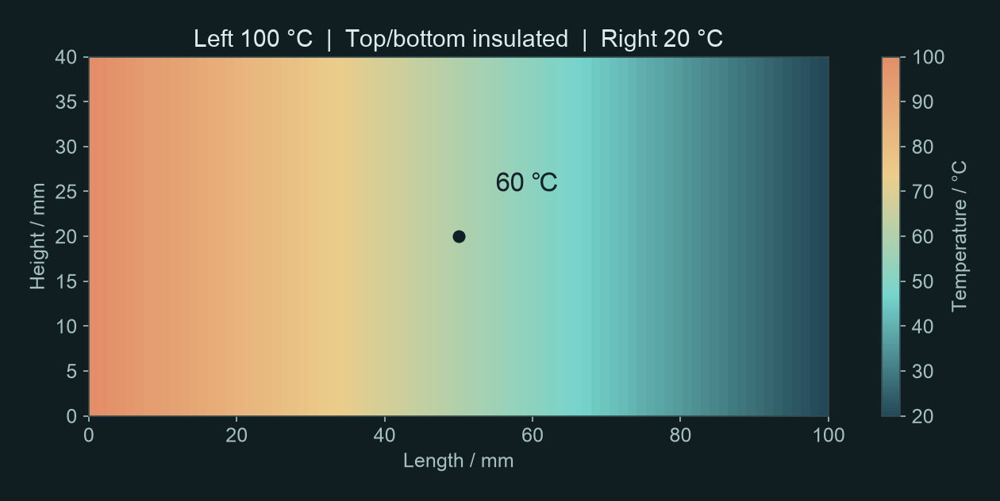
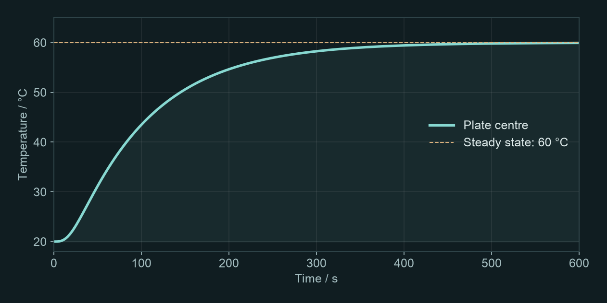

AGENTFEM / GETTING STARTED
Your first finite element analysis with AI
Four short exercises. Copy a prompt, run a model, then change one condition and compare the results.
Before you start
Check that your AI assistant can run AgentFEM. For example, Codex can use a local command line or MCP tools with your permission. A chat-only assistant without access to computation tools cannot run these simulations.
Open a project folder for your exercises and send this to your AI assistant:
Check whether you can run AgentFEM. Tell me its version and where projects will be saved. Ask for my approval before installing or configuring anything. For now, check the environment only; do not start a simulation.
Once the environment is ready, send the instructions below. Wait for the reply, then choose an exercise and send its prompt.
I will send a specific exercise next. Once you receive it, create a new AgentFEM project, check the settings and run the calculation. Save the model and results. Provide a result figure and key values with units, report the mesh and solver settings, and briefly explain the results. Tell me if essential information is missing or you cannot run the calculation. For now, reply only: ‘Ready. Please send the exercise.’ Do not start modelling, guess the exercise or suggest topics.
Not installed yet? Setup guidance
Follow the AgentFEM installation guide, check that agentfem doctor works, then follow the AI assistant connection guide. On Windows, use WSL2. The Codex MCP documentation explains tool connections. Once configured, start each exercise by copying its prompt.
Start with a deformed shape
How far will this beam deflect?
Clamp the left end of a steel beam and apply a downward load at the right end. Look at the bent shape, then read the tip deflection.
Use AgentFEM to analyse a steel cantilever beam: length 200 mm, height 20 mm, thickness 10 mm, Young’s modulus 210 GPa and Poisson’s ratio 0.3. Fix the left end and distribute a total downward force of 200 N uniformly over the right end face. Use a 2D plane-stress, small-displacement linear-elastic model and neglect gravity. Show the deformed shape and the downward displacement at the midpoint of the right end (mm). State the deformation scale factor on the figure.

What to look for
A deformed-shape plot and the downward displacement at the midpoint of the right end. The left end stays fixed; displacement increases towards the tip.
Reference tip deflection: 0.383 mm
Locate the midpoint of the right end, then check the value and its units. Deformation is magnified 15 times in this figure; the actual deflection is about 0.38 mm. Beam theory gives approximately 0.381 mm, a useful magnitude check.
Try a follow-up
Increase the total force to 400 N, keep everything else unchanged and run again. Compare the two tip deflections and their ratio. Explain the result using beam theory.
For small-displacement linear elasticity, doubling the load should approximately double the displacement. You have completed your first parameter comparison.
Modelling notes
Include the 10 mm thickness when converting total force to traction in the 2D model: the uniform end traction is 1 MPa. The reference uses quadratic elements on an 80 × 8 mesh. Stress peaks at the clamped corners are not a basis for a strength assessment.
A different loading problem
How much does internal pressure expand a cylinder?
Apply uniform internal pressure to a thick-walled cylinder. Measure the outward movement of the inner wall and compare it with the outer wall.
Use AgentFEM to analyse a thick-walled cylinder: inner radius 25 mm, outer radius 50 mm, length 100 mm, Young’s modulus 210 GPa and Poisson’s ratio 0.3. Apply 10 MPa internal pressure, leave the outer wall radially free and apply no end-cap load. Use a linear-elastic axisymmetric model with zero axial displacement throughout. Report the inner-wall radial displacement (μm) and plot radial displacement through the wall at mid-length. Check against Lamé’s solution.

What to look for
The inner-wall radial displacement and a displacement profile from the inner to the outer wall. Radial displacement is the distance moved outwards along the radius.
Reference inner-wall expansion: 2.270 μm
The annulus shows the cylinder’s cross-section. On the right-hand plot, the horizontal axis runs from the inner to the outer wall; the vertical axis gives outward displacement. The finite element curve should agree closely with the analytical solution.
Try a follow-up
Increase the outer radius to 60 mm, keep everything else unchanged and run again. Compare the two inner-wall radial displacements, check them against Lamé’s solution and explain the effect of a thicker wall.
Here you change the geometry. Change just one condition at a time so that the cause of the difference remains clear.
Modelling notes
This idealised long cylinder has zero axial strain. It is not a freely extending or end-capped pressure-vessel model. The reference uses quadratic elements on a mesh with 40 radial and 4 axial divisions; inner-wall displacement agrees with Lamé’s solution.
From mechanics to heat transfer
How hot is the centre of the plate?
Keep the left side of a metal plate hot and the right side cold. Once temperatures stop changing, what is the temperature at the centre?
Use AgentFEM for 2D steady-state heat conduction in a metal plate: length 100 mm, height 40 mm and uniform thermal conductivity 45 W/(m·K). Hold the left boundary at 100 °C and the right at 20 °C. Insulate all other boundaries and use no internal heat source. Show the temperature field, centre temperature (°C), temperature profile along the horizontal centreline and rightward heat flux density (W/m²).

What to look for
A temperature field that cools from left to right, and the centre temperature. Steady state means temperature no longer changes with time.
Reference centre temperature: 60.0 °C
The centre lies halfway between the two ends. With uniform material, no internal heat source and insulated top and bottom boundaries, temperature varies linearly along the length. The centre is therefore at 60 °C.
Try a follow-up
Increase thermal conductivity to 90 W/(m·K), keep everything else unchanged and run again. Compare the temperature fields and heat flux densities. Explain the result using Fourier’s law.
With fixed end temperatures, doubling conductivity increases heat flux but leaves this steady-state temperature field unchanged. Changing a parameter does not always change the colour map.
Modelling notes
This is solid heat conduction only, without airflow or thermal stress. The reference mesh is 80 × 16. Temperatures are computed in K and displayed in °C.
Now follow the evolution
How does the plate warm up?
Use the same plate, initially at 20 °C throughout. This time, follow the heating process rather than looking only at the final state.
Use AgentFEM to simulate transient heating of a 2D metal plate: length 100 mm, height 40 mm and initial temperature 20 °C. Keep thermal conductivity 45 W/(m·K), density 7800 kg/m³ and specific heat capacity 500 J/(kg·K) constant. From the start of heating, hold the left boundary at 100 °C and the right at 20 °C. Insulate all other boundaries and use no internal heat source. Run to 600 s using backward Euler with a 2 s time step. Provide the centre-temperature curve and data table (°C). Save the temperature field every 10 s as a time series playable in ParaView.

What to look for
A rising centre-temperature curve and a temperature-field time series that you can play as an animation.
Centre temperature at 600 s: 59.94 °C
The centre does not reach 60 °C instantly: heat must travel from the left. Notice when the temperature begins to rise appreciably and when the curve flattens. Compare it with the previous steady-state result.
Try a follow-up
Reduce the time step to 1 s, keep the mesh and all other conditions unchanged and run again. Overlay the two centre-temperature curves. Compare the maximum temperature difference at shared sample times and the difference at 600 s to assess whether the original time step is adequate.
This checks a numerical setting rather than a physical parameter. Agreement after reducing the time step gives more confidence in the predicted heating history.
Modelling notes
The reference uses backward Euler with 300 increments. Equilibrium is not imposed at 600 s; 59.94 °C is the computed temperature at that time. Keep the XDMF file with its accompanying H5 file. Open the XDMF file in ParaView, select Temperature and play the time series.
Use the same approach for your next problem
Be more specific than “run a simulation”: what structure, what loads or heating, and what results? These are the essentials of a useful prompt. You do not need to write it like a program.
You do not have to supply every detail on the first try. State what you know and ask the assistant to clarify missing conditions. Once you have a result, ask: “What happens if I change only this condition?”
If you only get code, or the results differ
Ask: “Run the calculation and open the result figure. Tell me where the project and output files are saved. If it fails, explain why; do not present an expected result as a computed one.” For small numerical differences, check units, loads, constraints, elements and mesh, then the time step. Matching colours alone are not a useful check.
Reference calculations: 7 October 2026, AgentFEM 0.4.0.dev0 / DOLFINx 0.11.0. Values and version record. These introductory models are not engineering safety assessments.